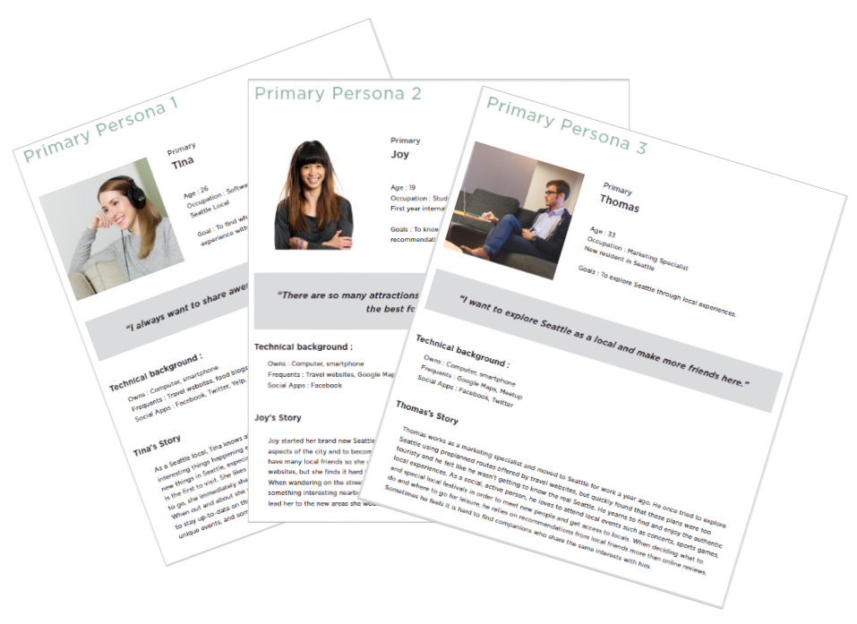
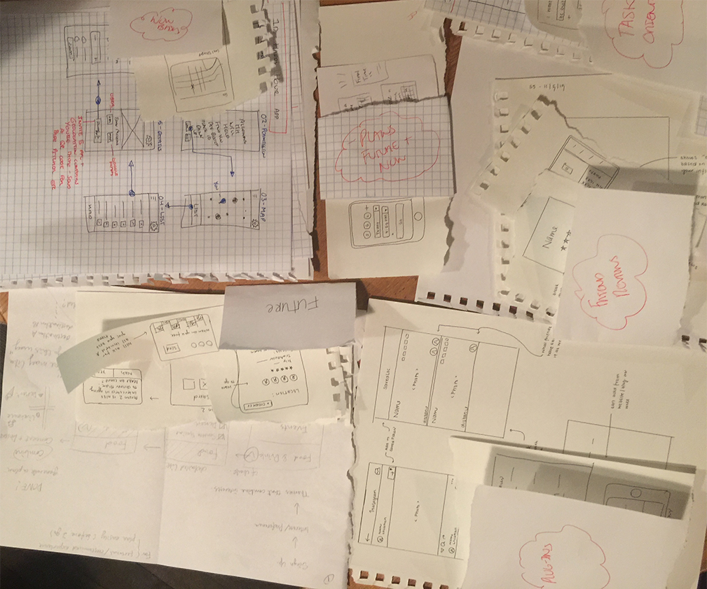
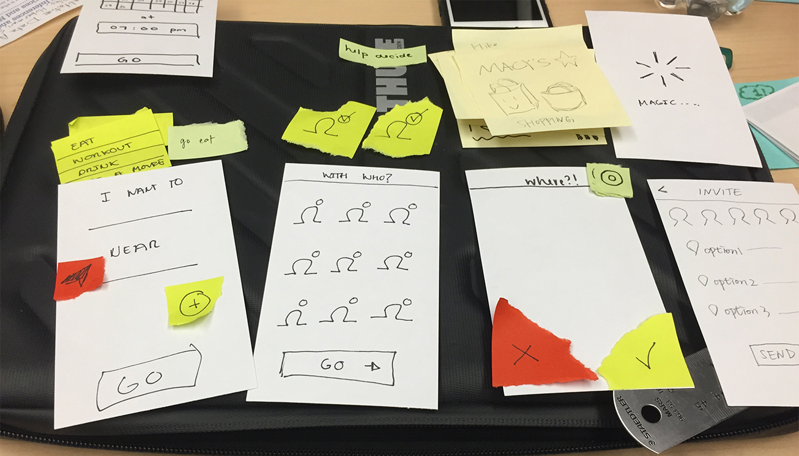

GoSeek - Making Planning Fun
- Goal: How can we use interactive technology to create a more engaging and personal experience for exploring a place?
Introduction
This project was developed on my User Centered Design class in a team of 4.
Domain: Traveling & Exploration
Problem Space:
- Every city presents several opportunities for adventures.
- Current technology is often based around fixed itineraries or lists of reviews / recommendations
- Want to find out if we can offer a more playful, interactive experience based on individual’s interests and intentions to get people out to explore more of the city.
Inital Goal: How can we use interactive technology to create a more engaging and personal experience for exploring a place?
Summary of the solution:
Go Seek is a mobile application that will provide users with personal recommendations about where to go or what to do in their city. It will also easily allow a user to invite friends to join them.
The premise of Go Seek is that people tend to want to go places with their friends. However, organizing outings with friends also results in an additional level of stress, which can cause people to be less likely to go try something new.
In our application, we allow the user to select a few options for what they are interested in doing and then let them send this list out to their friends to help make the final decision. Once all the friends have responded, a final selection will automatically be made and the group can go enjoy their time together in the city.
We had the option to choose our topic, so we brainstormed and after a lot of thought we decided to focus on this design question:
How can we use interactive technology to create a more engaging and personal experience for exploring a place?
Which we complemented with the following research questions:
- How do people explore? What types of tools already exist within the industry? How do they succeed and are there any points of friction? What is most popular within the chosen demographic?
- What type of technologies do people have? What types of technologies do people use?
- What aspects do people want to explore (i.e. scenic spots, historical landmarks, art museums, city trails and paths, specialty stores, local restaurants, etc.)?
- What information about the individual is necessary to tailor recommendations (i.e. time of visit, method of transportation)?
| Method Used | Why? | How? |
|---|---|---|
| Survey |
|
|
User Interviews |
|
|
 This is a picture showing our affinity exercise. |
||
Competitive Analysis |
|
|
Lit Review |
|
|
Went well
- Interviews offered in depth insight into problem space
- Affinity practice helped to organize our ideas
- We were able to pinpoint common pain points and areas of opportunities
Challenges
- Find enough people to answer the survey
- Lots of information! How do we begin analyzing it?
Here you can review the entire process done for research that helped us creating the design of this product. Includes: Survey, Interview and Lit review.
With the findings in the research process, we created three personas. All of them were locals of Seattle who want to explore the city. It is assumed that they know parts of the city and have an interest for rediscovering places or finding new locations to enjoy.
After all the information from the research and our personas we needed to get the best ideas to start designing our prototype. For this:
Started with ideation…
- More than 30 sketches representing different ideas
- Affinity practice to organize
- End up with 8 different topics/ideas

- Selected the 4 most exciting topics
- Reiterate in the ideas with the team
- Resketch based on the selected topics
- Talked about pros and cons of each idea/drawing
- Selected top 3 promising ideas
- Review how to incorporate them together
What went:
- Soooo many good ideas
- Affinity practice helped to organize our ideas
Challenges:
- Tooo many ideas
- Which one to start with?
- Integrate different ideas into one
- Priority for prototyping
- Keep consistency with research
- Getting excited about new ideas
- Stick on research findings
- Time is limited
Paper Prototype
We started with a paper prototype that was fast to do but incredible useful. Next is an image of the first version of the paper prototype.
Lo-Fi Prototype
Then we created basic images in illustrator and used POP to test our low-fidelity prototype. Below are a few of the screens we used:
Hi-Fi Prototype
Feel free to try our prototype here.
In order to do our usability tests, we created a hi-fidelity prototype using illustator and used InVision to add interaction to it. Below are a few of the screens we used:
Preparation
- Upated task lists used on the paper prototype to ensure all our new screens were covered.
- Recruited Participants (I recruited 3 out of 7)
Usability tests
- Each member of the team ran tests on their participants
- Took notes of observations and feedback
Analysis of results
- Found patterns on findings
- Assigned severity rates to issues
- Analysis of what features we should change or add
Went well
- Discovered that people liked the application
- Detected critical functionality missing even for the prototype version.
- Found out new potential features that were not considered before.
Challenges
- Find people for testing because was a holiday weekend (Thanksgiving).
- Assign the exact severity grade for certain items.
- Select what features to add based on feedback because people's needs are different.
Here you can review the process done for usability test.
After implementing the needed changes from the usability tests we created a specs document that included mainly:
- Process flow
- Design decisions
- Annotated screens
- Styleguide (including typography, colors, icons, etc)
This is an example of one of the annotated screens that I created for the specs doc.
Here you can review the specs document. With this documents developers could start the implementation right away.